Dotonburi is a shopping district in Osaka, so we decide to go do some shopping/street seeing. There's no large appeal for us to go shopping, but rather, we're going to go see if there's anything worth eating. Dotonburi usually has larger crowds at night as well as the more classic "Japanese city" look with the neon lights etc. So, unfortunately we weren't there for that, but there was good food along the way.
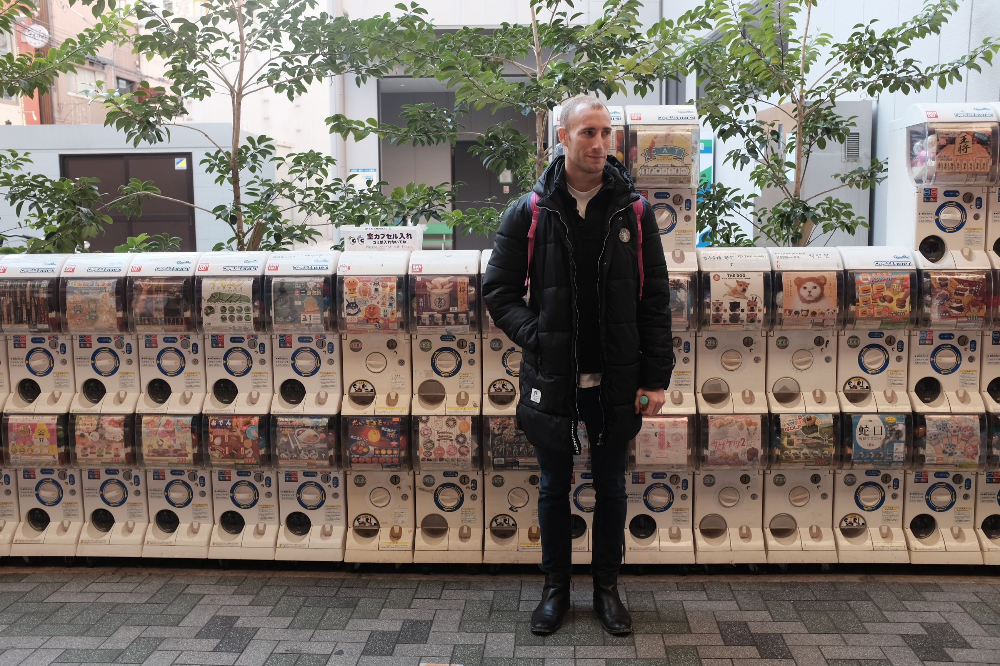
One famous Japanese chain restaurant is Yoshinoya, or 吉野家 for my Hong Kong folks. In the U.S. we also had one since the area I grew up in had many Japanese people. I'd always kept saying how I wanted to try it, so we finally got around to it. For fast food, count on the Japanese to make it still very high quality.
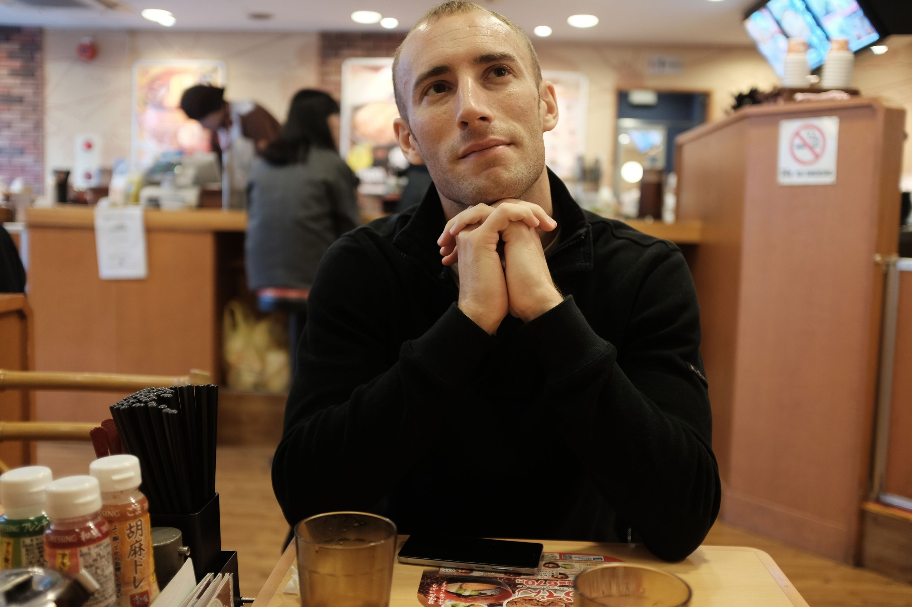 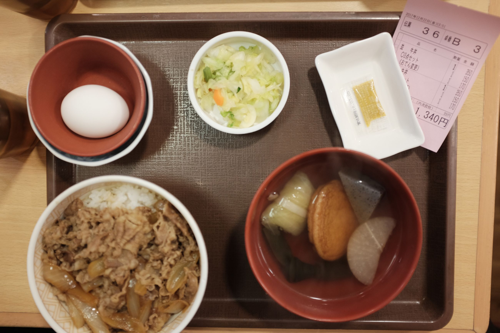 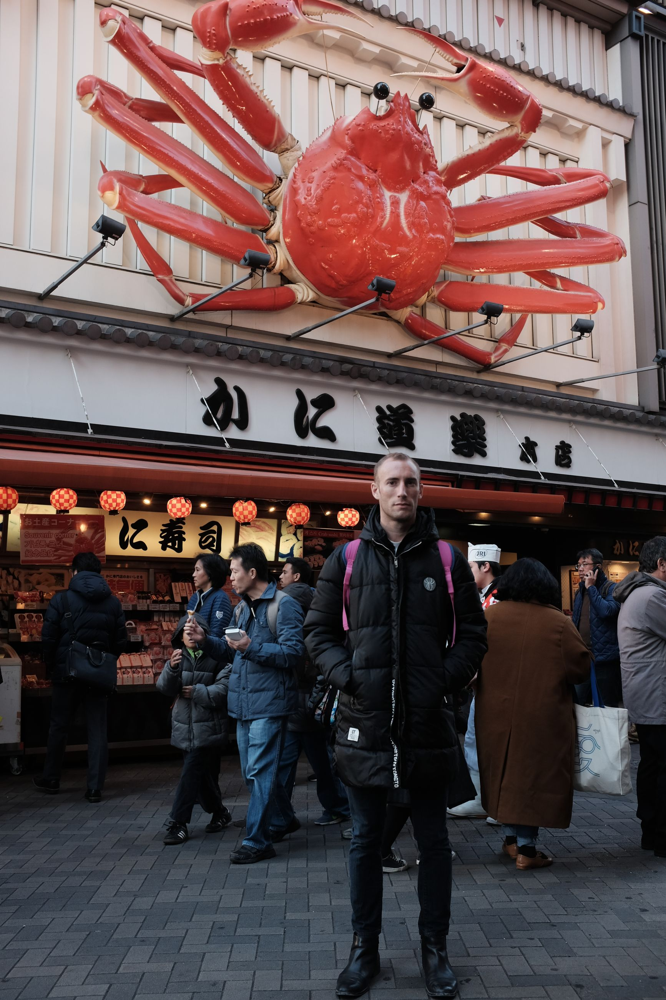 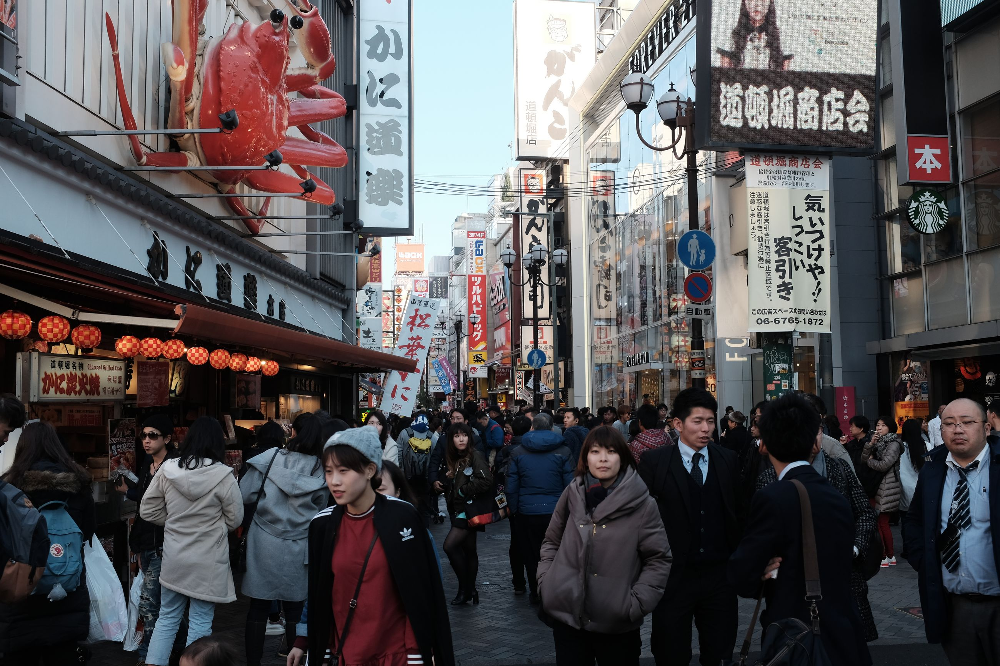
Alright, enough of that. Food time!
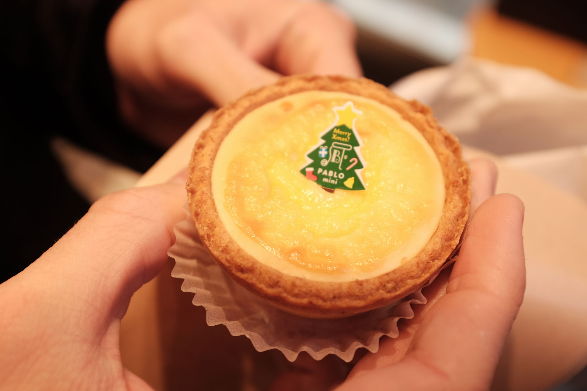 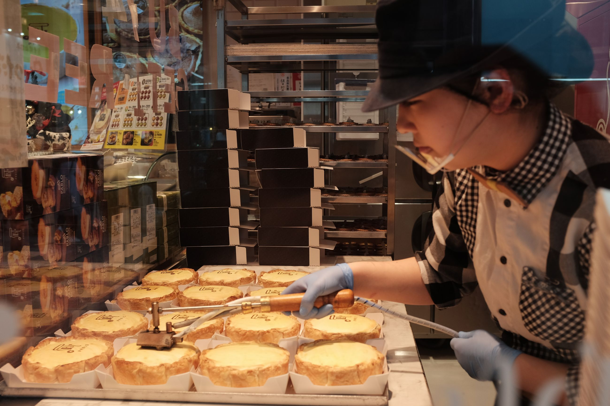
At night, we make our way over to Osaka castle as the sun is setting. At night, the place lights up and makes for a nice photography spot. Again, castles.
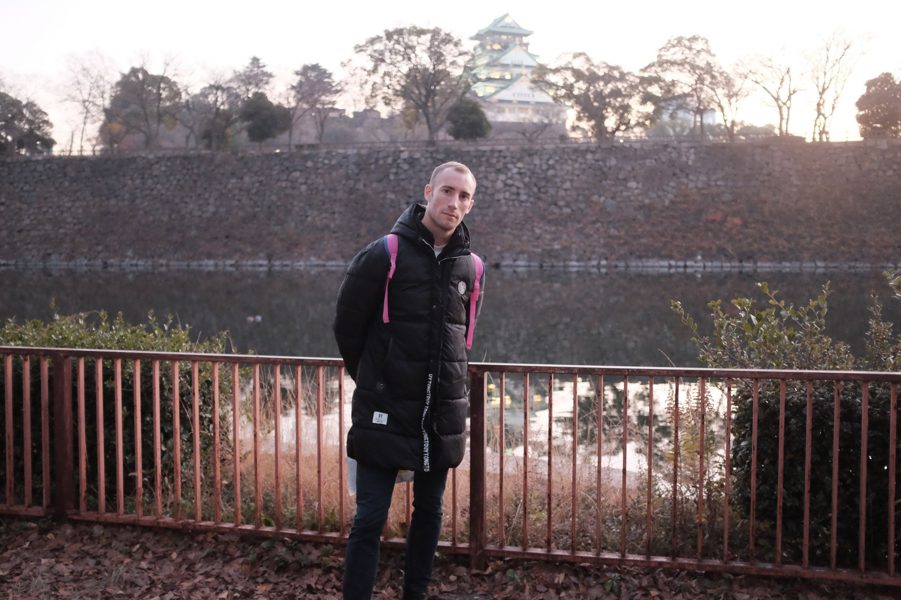 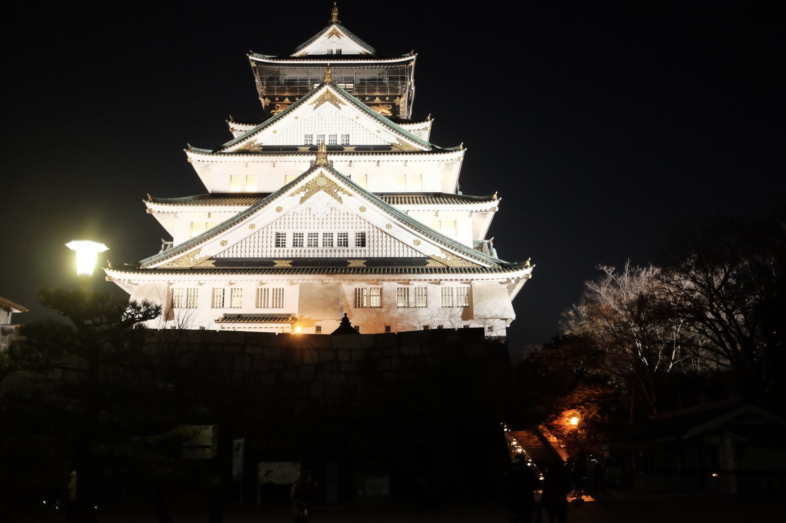 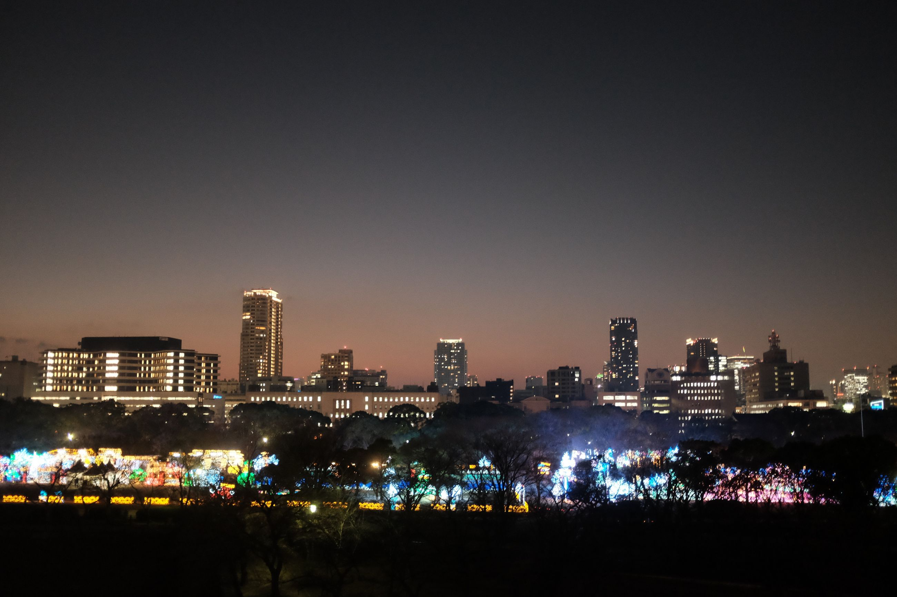 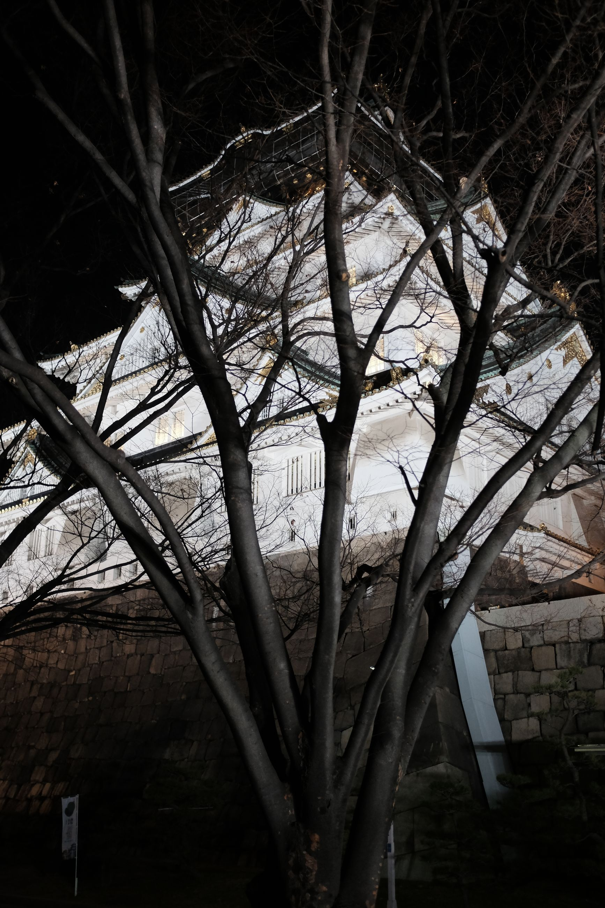
Since we're a bit full from al lthe food at Dotonburi, for dinner we decide on some takoyaki balls that a streetside stall is particularly famous for. After that, we went to a super sento with multiple stories to relax. This was the biggest one we went to, but there were a lot more pools and amenities. And, we weren't surrounded by uncles like in the other scenarios.
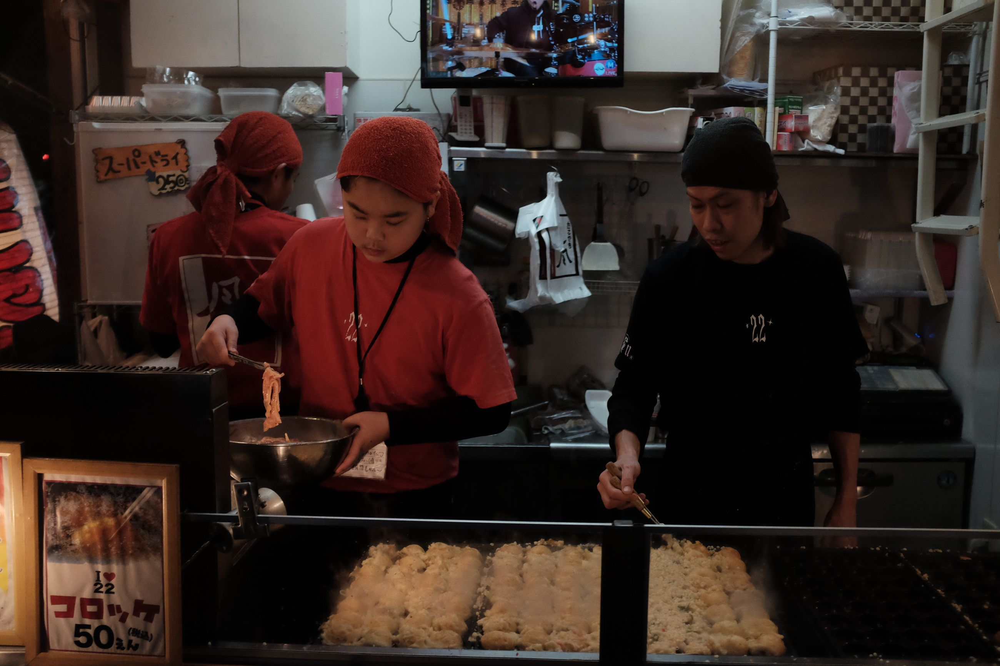 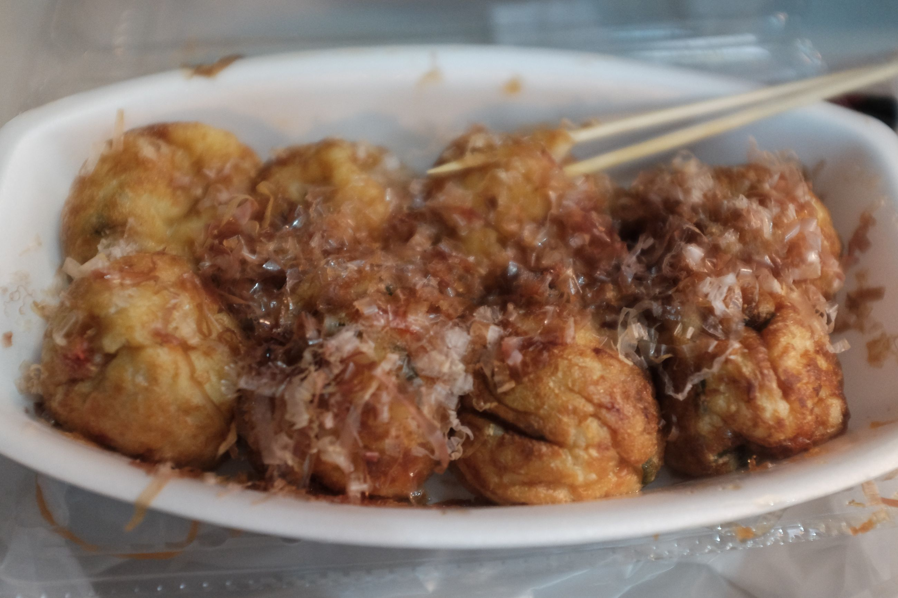
Overall impressions of Osaka: wish we could've stayed longer. For culture and food, and the life-of-ease value, Osaka seems much better. It's a lot more (and I hate this word) hipster when compared to Tokyo, with some naturalness to that identity. It doesn't try as hard I'd say, but manages to produce this kind of cool alternative culture. I mean, that's Japan in general, but in Osaka it seems much easier to cultivate than in the big city. Next stop, Nara.